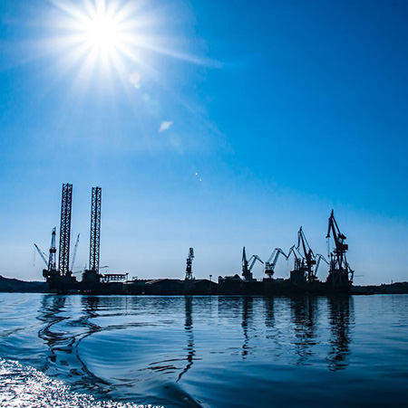
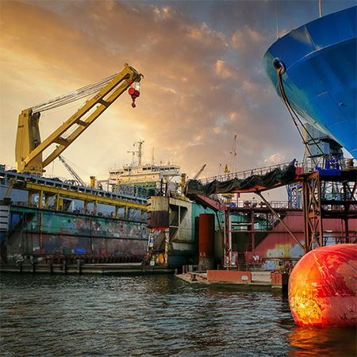
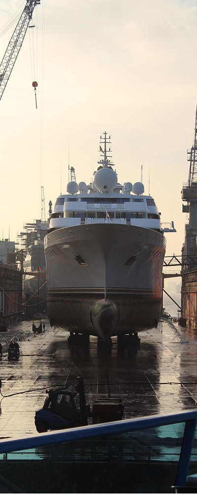
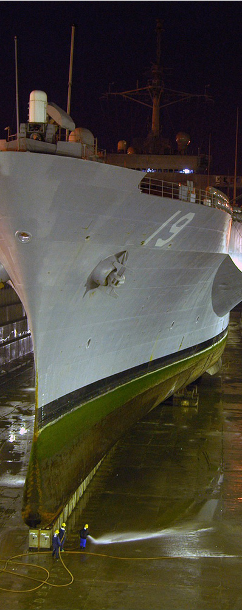
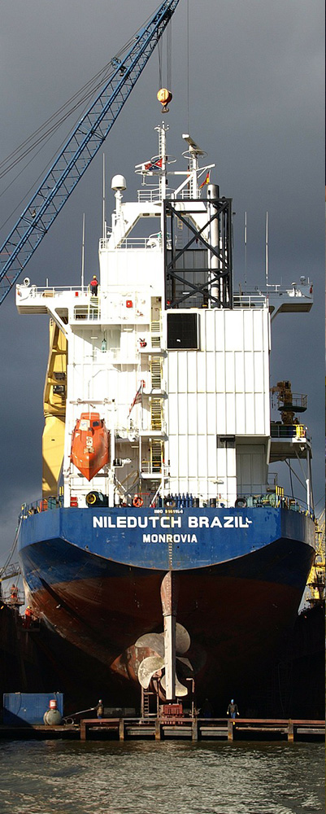

home>회사소개>조선소소개
조선소소개
- 삼성중공업 거제조선소 방문을 환영합니다
- 삼성 중공업은 생산공정 자동화율 68%로 세계 최고의 자동화 조선소를 실현해 나가고 있습니다.
-

- “세계 최고의 도크 회전율을 자랑하는 조선소”
- 도크회전이란 도크에서 건조하는 선박의 진수 횟수로 회전율이 높을수록 뛰어난 건조공법과 생산효율을 갖추고 있음을 의미합니다. 또한 도크 회전율은 조선소의 매출증대에 직결되는 것으로서 조선소의 기술수준과 생산효율을 가늠하는 가장 확실한 척도입니다. 삼성중공업 거제조선소에서 가장 큰 제3도크는 길이 640m, 폭 97.5m, 깊이 12.7m로 세계 최대 부유식 해양설비인 Shell Prelude FLNG를 성공적으로 건조하였습니다
-

- “세계3대 국제규격에 이어 세계최초로 ISO50001 인증 첫 번째조선소 ”
- 거제조선소는 ISO9001품질경영, ISO14001환경경영, OHSAS18001안전보건경영 등 세계가 규정한 3대 국제규격을 공인받은 첫 번째 조선소입니다. 최근에는 에너지경영 국제표준인 ISO50001을 세계 최초로 취득해 조선업 국제 인증을 모두 최초로 취득하는 진기록을 달성하기도 했습니다.
-
- “로봇을 활용한 세계 최고의 생산자동화율”
- 삼성중공업 거제조선소는 LNG선 화물창을 자동으로 용접하는 스파이더 로봇을 비롯해 파이프내부의 용접상태를 검사하고, 이물질을 청소해주는 파이프내부 자동 검사청소로봇, 선체외벽을 자유자재로 타고 다니면서 작업을 하는 블라스팅 로봇 등 자체 개발한 각종 지능형 로봇들을 활용해 안전은 물론, 완벽한 품질을 확보하고 있습니다.
-

육상도크
도크란 선박을 최종 조립하기 위해 바닷가를 파서 만든 일종의 대형 웅덩이 웅덩이 안에서 배를 만들고 배가 완성되면 도크 문을 열어 바닷물이 들어오게 해 배를 바다에 띄운다.
- 1도크
- 283M + 46M + 11M 유조선,LNG선
- 2도크
- 390M + 65M + LNG선, 드릴십
- 3도크
- 640M + 98M + 13M 초대형컨테이너선
-

플로팅도크
플로팅 도크란 일명 움직이는 조선소로 해상에서 선박을 건조할 수 있도록 U형 단면으로 이루어진 대형 바지선이다 주요 장비로 50개 이상의 선박평형수 탱크와 이를 운용 하기위한 펌프, 벨브 계류 시스템이 존재한다
- G1 도크
- 유조선, 드릴십, FPSO
- G2 도크
- 유조선, LNG선
- G3 도크
- 컨테이너선, VLCC, LNG FPSO
-

플로팅도크2
삼성중공업에서는 수십개의 플로팅 도크를 소유 하고있으며 세계적으로 인정받고있다. 대형바지선을 세계로 이동시키며 선박 기술의 중심에서 세계를 이끌어가고 있다.
- G4 도크
- 컨테이너선, VLCC, LNG FPSO
- G5 도크
- 컨테이너선, VLCC
- OFD
- 해양설비 전용